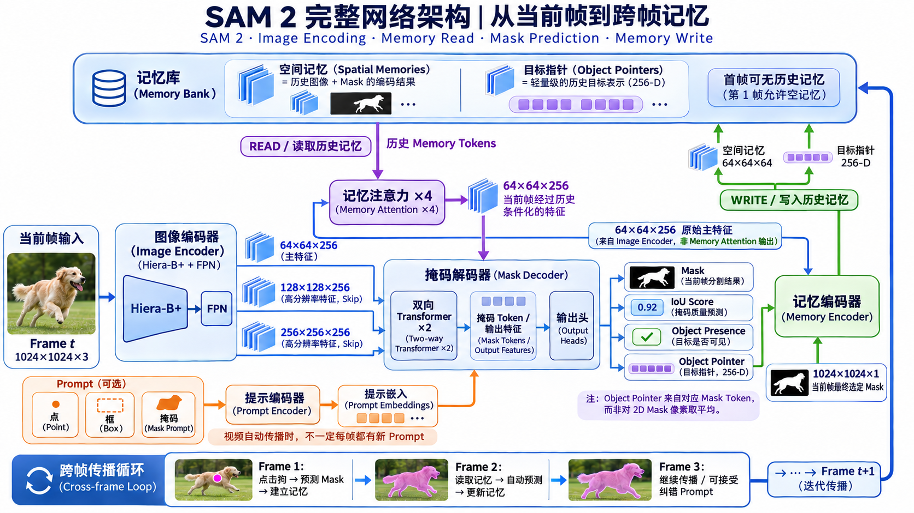
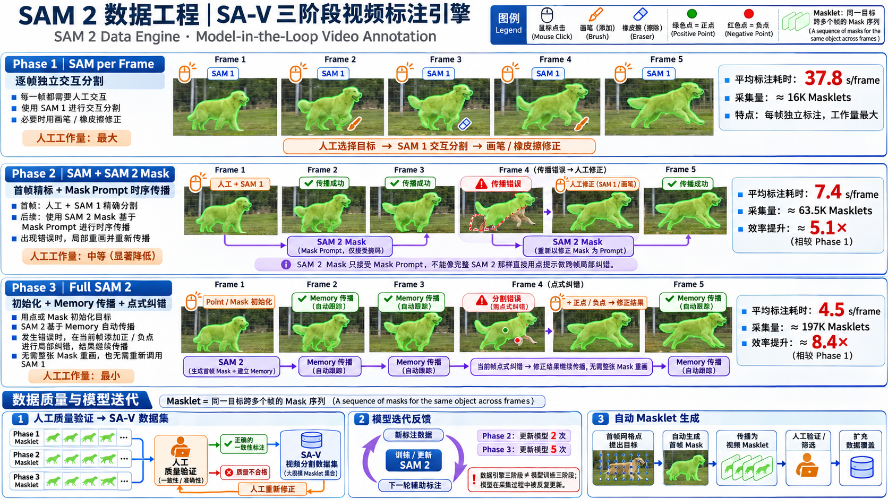
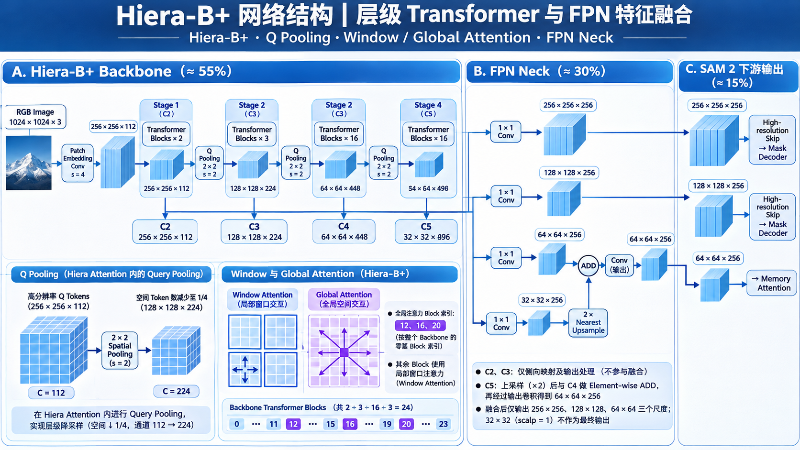
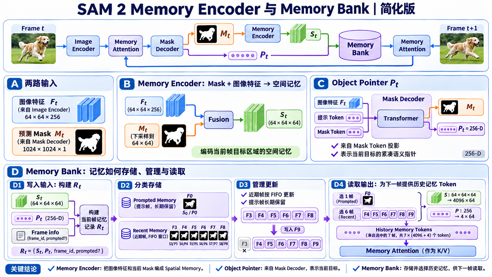
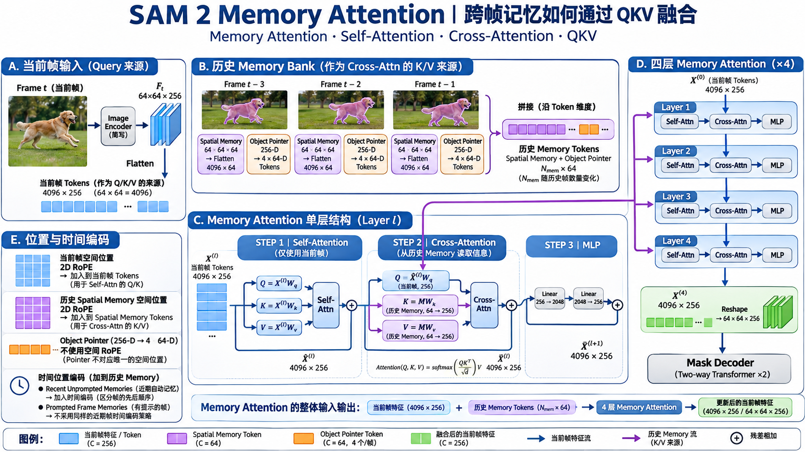
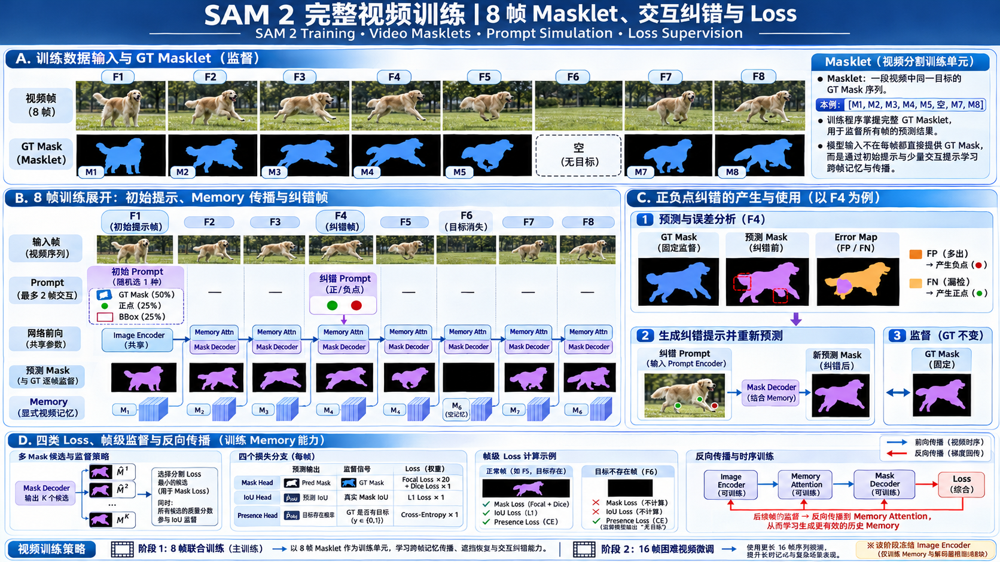
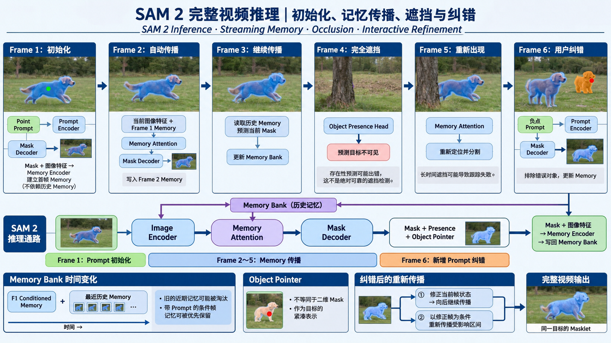

SAM 2｜完整原理、数据工程、网络、训练与推理
从「是什么 → 系统全景 → 数据如何生产 → 逐模块前向传播 → Loss 如何训练 → 完整推理」构建可验证的 SAM 2 知识体系。已经理解的 SAM 1 内容压缩，真正新增的 Memory 读写、Object Pointer、Presence、跨帧监督完整展开。
01 / TASK SAM 2 是什么？为什么要从单图走向视频？
先建立任务定义。明确 SAM 1 已经解决什么、SAM 2 新增什么，以及「可提示视频分割」究竟要求模型输出什么。
SAM 1：图像提示分割
对当前图片给一个点或框，输出这张图上的 Mask。下一张图仍要重新说明目标是谁。
SAM 2：Promptable Visual Segmentation
可以只在某个视频帧提示目标，后续帧即使没有新提示，也要持续输出同一个目标的 Mask。
1.1 为什么 SAM 1 的输出还不能直接解决视频问题？
假设第一帧点到一只狗。第二帧狗移动了，单靠第一帧的二维 Mask 坐标并不能知道新位置在哪里；背景可能与狗同色，画面里也可能出现另一只相似的狗。关键不是“把上一帧 Mask 复制过去”，而是让当前帧特征查询历史帧中那个目标的外观与空间信息。
因此 SAM 2 把当前帧分割拆成两步：先从历史 Memory 中读取目标上下文，再用 SAM 风格的 Mask Decoder 做当前帧分割。生成 Mask 后，还要将结果写成下一帧可以继续使用的 Memory。
图像特征
目标是谁
1.2 三项核心贡献：任务、模型、数据
统一图像与视频分割
输入点 / 框 / Mask，输出一个或多个目标随时间变化的 Masklet；单张图像可视为单帧视频。
流式 Memory
Memory Encoder 写入、Memory Bank 存储、Memory Attention 读取；加 Object Pointer 和目标存在性预测。
SA-V 视频数据引擎
从逐帧人工修正走向跨帧传播与交互纠错，用模型参与标注、再用数据训练模型。
1.3 输入、输出、成功标准——从一个目标贯穿整个视频
| 维度 | SAM 1 单图 | SAM 2 视频 |
|---|---|---|
| 输入 | 单张图像 + 正/负点、框、Mask | 一组视频帧；任意一帧或多帧上的同类型 Prompt |
| 输出 | 这一帧的分割 Mask | 同一目标随时间变化的 Masklet：M₁、M₂、…、Mₜ |
| 关键困难 | 目标边界、提示歧义 | 身份连续性、外观变化、遮挡、重新出现、错误传播 |
| 是否依赖类别名称 | 不需要 | 仍不需要；SAM 2 不是文本检测器 |
| 纠错 | 在当前图片补点击 | 在任意视频帧补点击，然后修正受影响的传播结果 |
1.4 本文的学习边界
以 SAM 2（2024）原始论文 + 原始 Hiera-B+ 配置 为主。你已掌握的 MAE、Transformer、SAM 1 Prompt 编码、Focal/Dice 基础仅简述；对于 Memory 读写、Object Pointer、无目标帧、视频交互训练等新增机制，完整给出输入、输出、因果关系及监督来源。SAM 2.1 的一些配置与工程行为可能不同，本文不混用版本。
02 / OVERVIEW SAM 2 大致长什么样？整机连接和真正改进点
这一章只建立「模块地图」，先不研究内部卷积和注意力：每条箭头的输入来自哪里，输出流向哪里。
2.1 模块分工：7 个角色，但不是 7 条串行网络
| 模块 | 负责的问题 | 谁给它输入 | 它把结果给谁 | 相对 SAM 1 |
|---|---|---|---|---|
| Image Encoder | 当前帧有什么视觉特征？ | RGB Frame | Memory Attention；Decoder 的高分辨率 Skip；Memory Encoder | 由 ViT-H → Hiera + FPN |
| Prompt Encoder | 用户指定哪个目标？ | Point / Box / Mask（可选） | Mask Decoder | 基本继承 |
| Memory Attention | 历史目标信息如何进入当前帧？ | 当前主特征 + Memory Bank | Mask Decoder | 全新 |
| Mask Decoder + Heads | 当前帧 Mask、质量、目标是否存在？ | 更新的图像特征 + Prompt + High-res Skip | 当前 Mask / IoU / Presence / Pointer | 主体继承，加入 Skip / Presence / Pointer |
| Memory Encoder | 将本次 Mask 转换为未来可检索的信息 | 原始帧主特征 + 当前 Mask | Spatial Memory | 全新 |
| Memory Bank | 缓存近期帧和条件帧信息 | Spatial Memory + Pointer | Memory Attention | 全新 |

左→右画 Image Encoder / Memory Attention / Mask Decoder，Prompt Encoder 从侧面接入，Memory Encoder 从 Mask+原始特征写回 Memory Bank；突出 Read 与 Write 两条不同箭头。
sam2-cross-frame-memory-architecture.png2.2 网络总图：注意两条 Encoder 并行、两条 Memory 箭头方向相反
2.3 从 Frame 1 到 Frame 2 的最短完整计算
- Frame 1：Hiera+FPN 编码图像；由于暂无历史 Memory，跳过正常的历史读取，以点/框提示得到目标 Mask。
- 写入：Frame 1 的 Mask 与未经 Memory Attention 更新的原始帧特征送入 Memory Encoder，得到空间 Memory；当前 Mask 对应的 Mask Token 变成 Object Pointer，一同保存。
- Frame 2：同样运行 Hiera+FPN，但不再需要人提供新点；当前图像特征作为 Q，Memory Bank 的历史信息作为 K/V，在 Memory Attention 中读取目标的过去信息。
- 预测：更新后的 Frame 2 特征进入 SAM-style Decoder，输出 Mask、质量和目标存在性；再次生成 Memory 供 Frame 3 使用。
这条流式过程的计算图主体每帧保持一致，新帧不需要重新计算之前帧的整个 ViT。用户在中间某一帧纠错时，该帧会成为条件帧，后续可依次重新传播。
2.4 三类变化：完全继承 / 实现替换 / 新的学习问题
几乎直接继承
Point / Box / Mask 提示编码思想；Two-way Transformer；Mask Token → 动态生成像素 Mask；Focal/Dice 与交互式纠错思想。
结构发生变化
Hiera 的层级主干、FPN + 两路高分辨率 Skip；IoU 回归改 L1；新增目标可见性 Head。
真正新的机制
Memory Encoder / Bank / Attention；Object Pointer；连续帧训练；无目标帧监督；时序纠错与传播。
03 / DATA ENGINE 数据工程：SA-V Masklet 是怎样生产出来的？
这是研发与标注工作流，不是模型权重训练步骤。先看视频 Masklet 的生产、验证和数据分布，具体训练放第九章。
3.1 数据工程线：SA-V 的三个阶段
视频标注的单位叫 Masklet：一只狗在几十帧视频里的 Mask 序列，不是单个图片 Mask。SA-V 的人工标注工作流分三次演进，重点是谁负责修正、历史信息能否传播。
Phase 1：用 SAM 1 给每一帧单独做交互式分割，人工修边；准确但慢，因为不传递历史信息。Phase 2：在首帧先用 SAM 1 做出正确 Mask，交给“只接受 Mask Prompt”的早期 SAM 2 Mask 在视频中传播；发现错帧，需要再用 SAM/画笔重建或修正局部分割。Phase 3：完整 SAM 2 可以直接在传播出错的帧追加点提示、借助历史 Memory 纠错，而无需每次从零分割。Phase 2/3 训练更新过多次，这是数据生产反馈循环，不是按顺序解冻 Backbone、Decoder。[论文 §5]
为什么需要自动 Masklet？
人工容易优先选择显著的大目标，于是系统在视频首帧用规则点网格提出大量 Mask 候选，将这些 Mask 跨帧传播成 Masklet，再交由人工验证。合格者进入数据集；失败案例反过来让标注员纠正并形成更有挑战性的数据。这个自动化过程不同于 SAM 1 的单图 32×32 生成器；它产生的是跨帧目标序列。

三行对比：Phase 1 逐帧 SAM 标注；Phase 2 仅 Mask Prompt 跨帧传播 + 用 SAM 重画纠错；Phase 3 直接点击纠错及记忆传播。同时画标注效率 37.8→7.4→4.5 s/frame。
sam2-sav-data-engine-overview.png3.2 把三个阶段放进同一个「标注错误」案例
第一帧画出狗；下一帧狗移到右边时，仍要在新帧重新分割，再人工刷边缘。历史 Mask 无传播功能，时间成本高。
首帧仍需要 SAM/人工得到一张正确 Mask，SAM 2 Mask 向后传播。若第 4 帧把狗腿分错，标注者使用 SAM / Brush / Eraser 重新制作局部正确 Mask，再继续传播。
完整 SAM 2 先传播到第 4 帧；标注者可以直接在错误位置点正点或负点，利用既有历史上下文修正，无须从头做第 4 帧的 Mask。
3.3 为什么「全自动 Masklet」也需要验证？
自动生成并不等于自动拥有 GT。SAM 2 先用首帧网格点提出候选实例，再传播为候选 Masklet；人工审核可将其标为 satisfactory / unsatisfactory。合格结果充实 SA-V 的覆盖面，失败结果反过来成为人工纠错的入口。因此这一循环改善的是采样覆盖与标注效率，不是通过 NMS 自动证明 Masklet 正确。
| 数据口径 | 规模 / 意义 |
|---|---|
| SA-V 总视频 | 约 50.9K |
| SA-V 全部 Masklets | 642.6K，含人工与自动 |
| 人工 Masklets | 约 190.9K（论文数据集统计口径） |
| 自动 Masklets | 约 451.7K |
| Phase 1 / 2 / 3 采集数 | 16K / 63.5K / 197.0K；这是各阶段采集工作量，不应直接相加后当作最终 SA-V 人工训练集规模 |
| 训练时使用 | 论文发布模型的联合训练使用 SA-V 的人工标注 Masklet，不将自动 Masklet 直接混作人工 GT |
3.4 数据引擎为什么能够促进模型改进？
一方面收集大量真实的目标形变、遮挡与重新出现案例；另一方面标注者被鼓励寻找需要多次纠错的困难目标，避免数据只包含容易分割的显著物体。训练后的模型变好，又可以减少下一个标注版本的人工操作。这与 SAM 1 的「模型辅助采数据」思想相同，但监督单位从单帧 Mask 变成时序一致的 Masklet。
3.5 自动 Masklet 的首帧网格采样到底做了什么？
论文在整幅首帧使用 32×32 点网格，同时在 2×2 的 4 个重叠 Crop 上采用 16×16 网格，在 4×4 的 16 个重叠 Crop 上采用 4×4 网格；这些点提供候选目标的初始 Prompt，再进行跨帧分割与质量审核。多尺度 Crop 的作用是提升不同大小目标被采到的机会，不是通过 32×32 网格直接生成 GT。
原文对应：§5 Data / Appendix E。
04 / IMAGE ENCODER Image Encoder：Hiera-B+ 为什么能产生多尺度特征？
本章只负责图像表征和与下游的连接。Hiera 主网络图预留高清插图位，文字明确维度、Q Pooling、窗口/全局注意力以及 FPN 真正融合的层。
4.1 Hiera → FPN：四种空间尺度是怎样来的？
以原版 SAM 2 的 Hiera-B+ 为示例，输入仍按 1024×1024 图像说明。Hiera 是层级式视觉 Transformer：沿着网络阶段，空间分辨率逐级降低、通道数逐级增加；你已经懂 ViT，因此只需要记住网络产生了四个尺度。FPN 使用 1×1 Conv 将这些特征投影到 256 通道，并对 stride 16/32 分支做自顶向下融合；stride 4/8 的高分辨率特征则作为后续 Mask Decoder 的跳连输入。

严格按原版 B+：1024 输入；四阶段 256²×112、128²×224、64²×448、32²×896；2/3/16/3 blocks；三处全局注意力；C5→C4 做 Top-down，C2/C3 只做 lateral 映射。
sam2-hiera-bplus-fpn-architecture.pngFPN 的价值：主分割特征是 64×64，有较大感受野、适合跨帧查找目标；而精准边界需要 128×128 和 256×256 的高分辨率细节。两者职责不同，因此高分辨率 Skip 绕开 Memory Attention，只在 Mask Decoder 上采样时补充。它不是把所有 Hiera 尺度都拼进 Memory Attention。
4.2 Backbone 阶段与「降采样」准确发生在哪里？
| 阶段 | 输入/输出形状 H×W×C | Block 数 | 关键动作 |
|---|---|---|---|
| Patch Embed | 1024×1024×3 → 256×256×112 | — | stride=4 的卷积 Patch Embedding |
| Stage 1 | 256×256×112 | 2 | 分辨率不变，提取高分辨率结构 |
| Stage 2 | 128×128×224 | 3 | 阶段转换时 Q Pooling，空间 /2，通道 ×2 |
| Stage 3 | 64×64×448 | 16 | Q Pooling，含少量全局注意力 |
| Stage 4 | 32×32×896 | 3 | Q Pooling，深层语义特征 |
这里的「阶段」不是四个互不相关的独立 Encoder。信息沿 S1 → S2 → S3 → S4 依次流动；在特定阶段边界降低 Token 数量，便于控制计算量并形成多尺度输出。
4.3 Q Pooling 不等于「先做池化，再做普通 ViT」
Hiera 在层级转换处使用对 Query 的池化降低输出空间 Token 数，而非简单把完整 Attention 输出后再一律 MaxPool。可以在理解层面先记成「降低 Q 位置数量 → 本阶段输出空间分辨率减半」，之后再研究具体 Attention 代码。局部窗口限制 Attention 感受范围，少量全局 Block 允许更大范围的信息交互；这与 Q Pooling 是两个不同维度的设计。
在原版 Hiera-B+ 配置中，专门设置全局注意力的 Block 索引是 12、16、20（按官方配置中的索引口径）；其他主要采用局部窗口 Attention。全局注意力是某些 Block 的注意力范围设定，不应误当成 FPN 的层间融合。
4.4 FPN 在原版 SAM 2 的真实融合路径
32²×896
1×1 → 256
64²×256
64²×448
1×1 → 256
64²×256
128×128×256
来自 C3 的侧向通道投影；在默认 B+ 配置中不进行这一路与 64² 的 Top-down ADD；进入 Decoder 第一条高分辨率 Skip。
256×256×256
来自 C2 的侧向投影；在默认配置中也不继续做自顶向下 ADD；进入 Decoder 第二条高分辨率 Skip。
fpn_top_down_levels=[2,3]，并通过 scalp=1 去掉最粗一层的单独最终输出，留下 64²、128²、256² 三路下游特征。没有额外 PAN。4.5 相比 SAM 1，Backbone 改变了什么？没有改变什么？
SAM 1 的 ViT-H 主要产生单尺度图像 Token，经 Neck 输出 64²×256。SAM 2 将 ViT-H 换成更易提供层级特征的 Hiera，把 64² 主特征交给 Memory Attention，同时把 128² 与 256² 作为 Decoder 的高分辨率旁路。改变的是视觉特征的生成与分流，不是 Mask Token 做像素点积的分割本质。
官方配置：sam2_hiera_b+.yaml；论文 Appendix D.1。
05 / PROMPT ENCODER Prompt Encoder：继承 SAM 1，但「可选 Prompt」很重要
复习与 SAM 1 相同的编码接口，再解释在视频中为什么有些帧没有任何新提示仍然可以分割。
5.1 先复用 SAM 1 的三种提示
| 用户输入 | 进入网络前 | 编码输出 | 在 SAM 2 中变化了吗？ |
|---|---|---|---|
| 正/负点 | (x, y, label)，label 为 1/0 | 随机 Fourier 位置编码 + 可学习类型 Embedding，每个点一个 256D 稀疏 Token | 编码原理沿用 SAM 1 |
| Box | 两个角坐标 | 两个角点的 256D Token | 沿用 SAM 1 |
| Mask Prompt | 通常为低分辨率 Mask / logits | 经卷积编码的 64×64×256 Dense Prompt，加到 Decoder 图像特征上 | 沿用 SAM 1；视频还存在「用历史分割结果作为 Memory」的另一条通路 |
5.2 为什么后续帧没有 Prompt Encoder 的新点也能工作？
Point/Box/Mask
初始目标 Mask
无需新点击
第一帧已经通过 Prompt 明确目标，并将目标相关特征存进 Bank。第二帧虽然没有新 Point / Box，Memory Attention 已经使图像特征具有上一帧目标的信息。Mask Decoder 可以使用无新提示的默认 Prompt 状态完成预测。网络不是偷偷自动生成用户点击，而是从另一条输入路径拿到了条件。
5.3 提示是否本身约束为 GT？再强调一次
正点告诉网络“这个位置属于想要的物体”，负点告诉网络“这个位置应排除”；它们不是训练时每个点上的额外 Loss。训练中的 GT Masklet 才给出完整区域监督。SAM 2 只是把这一逻辑从「当前帧」延伸为「当前帧 + 历史条件」。
什么不需要重学？
Fourier 位置编码推导、正负 Embedding、Box 双角 Token、Dense Mask 卷积编码，以及 Token 通过 Mask Loss 学会响应提示的机制。
需要新增理解什么？
有提示帧和无提示帧如何交替；提示既能指定目标也能修改目标；同一视频目标的提示可出现在不同时间点，并触发重新传播。
06 / MEMORY WRITE Memory Encoder + Memory Bank：一张 Mask 如何变成可以存储的记忆？
第二个新系统。完整解答输入源、卷积降采样、相加、融合、存储和 Object Pointer，而不把 Memory 当作「保存一张二值 Mask」。
6.1 为什么不能直接保存二值 Mask？
Mask 只告诉我们“上一帧的哪些像素属于这个目标”，却不会自动知道下一帧移动到哪里。它不包含完整的毛色、形状、背景区别等视觉表征；即便两帧颜色相似，目标的位置、形变和遮挡也会变化。SAM 2 因此保留图像编码特征，并用当前 Mask 对其施加目标相关的信息。
直接用上一帧 Mask
如果物体移动、相机移动或遮挡，坐标并不保真。
SAM 2 的 Memory
外观/空间
目标范围
让下一帧按内容与空间关系去查询，不依赖旧像素坐标恰好不变。
6.2 Memory Encoder 完整前向传播：尺寸要从头对齐
默认 1024×1024 输入，假设某帧预测出了高分辨率 Mask。Memory Encoder 有两条并行输入：当前帧原始图像主特征（64×64×256）以及本帧的预测 Mask（1024×1024×1）。Mask 先通过 Sigmoid 变成概率，再通过卷积逐步下采样到 64×64，同时扩展通道至 256，才能与图像特征做逐元素 ADD。
这条公式是结构层面的描述。真正的输入是原始当前帧主干图像特征，不是 Memory Attention 更新后的图像特征。其意义在于防止历史 Memory 在写入时一层层无控制地混进原始图像特征：每帧保存的是“当前观察 + 该帧目标 Mask”的描述。源码中 MemoryEncoder 的 `pix_feat_proj → + masks → fuser → out_proj` 正对应这个顺序。
6.3 Object Pointer：空间 Memory 之外为什么还需要一个向量？
空间 Memory 强在保留每个位置的结构细节；Object Pointer 强在形成较紧凑的目标级信息。SAM 2 不凭空为每只狗创造一个固定 ID Embedding，而是使用当前帧最终选中 Mask 对应的 Mask Token，经过输出投影得到目标向量。这样同一只狗在不同帧中可以产生随观察变化的目标表示。
256 维
256 维
64 维 Memory Tokens
注意，Pointer **不是 GT 类别标签、不是外观类别的固定编号**，也不是直接在下一帧输出一张 Mask。它会同空间 Memory 一起作为 Memory Attention 的 Key / Value 来源。为什么拆成 4 个 64 维？因为空间 Memory 使用 64 通道，Pointer 要进入同一记忆序列，必须匹配记忆侧的通道维度。[论文附录 D.1]
6.4 Memory Bank：保存什么、淘汰什么？
Bank 不是一条无限增长的历史序列。原版 SAM 2 的典型配置允许保留首个条件帧/其他被提示帧的 Memory，同时保留一个有限的近期未提示帧队列；示例配置 `num_maskmem=7` 表示 1 个条件帧加最多 6 个近期未提示帧的容量语义，具体被提示帧的选择与指针上限还受到单独参数控制。
交互演示：让第 1 帧作为条件帧，观察近期记忆如何滑动
实际推理还需要考虑是否由用户在中间某帧重新点击、是否反向传播视频，以及 Object Pointer 的存储上限。尤其是被提示帧不一定都在当前帧之前：离线双向传播时，未来时间位置上的已提示帧也可以成为已知条件；但流式在线前向过程不会凭空知道未来图像内容。

原始 64×64×256 帧特征走 1×1 Conv；1024×1024 Mask 分四次 stride=2 降到 64×64×256；逐元素相加、ConvNeXt-style ×2、1×1 Conv 输出 64×64×64；Pointer 单独进入 Memory Bank。
sam2-memory-encoder-overview.png6.5 Mask Downsampler 为什么既缩小空间又增加通道？
原始 B+ 的 MaskDownSampler 使用四次 stride=2 的卷积，逐步把大面积的 2D Mask 压缩到主特征 64×64 的网格。具体尺寸为：
空间每次 /2，Token 数 /4，通道数 ×4；这让每个低分辨率位置可保存更多局部区域信息。卷积并不是把高分辨率 Mask 的像素值“全部无损存下来”，而是在学习区域结构特征。随后它与原始图像主特征对齐通道并相加。这里是训练得到的表示，不是把一个二值像素强行当作类别标签。
6.6 Memory Encoder 的输入与输出在数学上是什么？
这一式子刻画了结构，不应误认成可直接用于训练的独立 Loss。若输入是已经给出的二值条件 Mask，源码会跳过对 Mask Logits 的 Sigmoid 等特定路径；若输入是预测 Logits，则先映射成概率。存储结果 Eₜ 约为 64×64×64，附带位置编码；目标 Pointer 是另一条 256D 支路。
6.7 Memory Bank 为什么不是无限长？
每帧都保存 4096 个位置的空间特征，视频越长，历史越多，Cross-Attention 的 K/V Token 越长，显存与计算都会上涨。论文因此使用有限近期帧队列（默认最近 6 帧）和条件帧记忆。B+ 配置中的 num_maskmem=7 包含被保留的条件帧及近期帧逻辑，不能直接解释成“永远只保存连续 7 个最新视频帧”。
6.8 为什么 Object Pointer 不是另一张 Mask？
Mask 的空间细节由 64×64×64 Spatial Memory 表达；Object Pointer 是根据被选中 Mask Token 得到的 256 维表示，方便 Attention 做目标级信息匹配。为了配合记忆侧 64D 通道，官方实现把一个 256D Pointer 分为 4 个 64D Tokens 放入 Memory 注意力的 K/V 序列。它不是类别 ID，也没有独立的「Object-ID GT」强制回归。
07 / MEMORY READ Memory Attention：当前帧究竟怎样向历史记忆查询？
这里重点复用你已经理解的 QKV，不再复习一般 Transformer。清楚指出每一步的来源、形状、被更新的对象与四层串联。
7.1 先纠正两个容易混淆的概念
Two-way Transformer
同一帧内，让 Prompt/输出 Token 与当前图像特征双向交互，目的是生成当前 Mask。
Memory Attention
先让当前帧的视觉特征向历史帧“读信息”，再把更新后的图像特征交给 Mask Decoder，目的是找到跨帧同一目标。
因此推理顺序是 Memory Attention → Prompt Encoder/Mask Decoder，不是用 Two-way Transformer 去读取整个 Memory Bank。Memory Attention 也不是两个 Cross-Attention 互相来回的结构：其每层的 Self-Attention 与 Cross-Attention 都更新当前帧特征，历史 Memory 在同一次前向传播中充当被读取的键值库。
7.2 输入的两个真实张量
以原版 SAM 2 Hiera-B+ 与 1024×1024 图像为例，当前帧经 FPN 得到 C₀ ∈ ℝ^(4096×256)，这就是主 Query 侧。假设 Memory Bank 有 s 个空间记忆帧，每帧 64×64×64，以及 p 个 Object Pointer（每个拆为四个 64 维 Token），那么记忆侧原始序列长度大致为 M = 4096s + 4p，记忆特征通道为 64。
4096×256
来自本帧 Hiera+FPN
M×64
空间记忆 + Object Pointer
4096×256
更新当前帧 C
这里最容易混淆的是 Memory 侧 K/V 的输入原来只有 64 维。Cross-Attention 内部有投影矩阵把记忆侧的 64 维变为与当前 Q 匹配的注意力通道（原始配置为 256），然后才能计算 QKᵀ。不能直接把 `4096×256` 与 `M×64` 乘起来。
7.3 一个 Memory Attention Block 的 3 步串行计算
q = Linear(Norm(C) + 可选位置编码)，k = Linear(Memory + memory_pos)，v = Linear(Memory)，并使用 RoPE 调整 Q/K 的相位。Self-Attention 同样使用 RoPE；不同配置中“是否直接加位置编码”与是否应用 RoPE 是两个独立开关。第 05 章采用原版 SAM 2 的配置事实，而非把所有位置编码都概括成一个加号。7.4 为什么注意力输出维度始终是当前帧 4096×256？
你在 SAM 1 学过的规律这里依然成立：谁提供 Q，注意力就输出多少个位置。Memory Cross-Attention 中 Q 有 4096 行，K/V 有 M 行，因此注意力分数矩阵是 4096×M；乘上 V 后仍得到 4096 行，每一行通过输出投影回 256 维。所以不是把历史 6 帧拼到当前帧输出，而是当前的 4096 个像素位置从历史取回相关信息。
7.5 交互实验：切换 Attention 步骤看 Q/K/V 来源
7.6 四层是如何串联的？Memory 会被更新吗？
第一层输出 C₁，第二层把 C₁ 作为输入继续读取同一个历史 Memory，最后得到 C₄。注意：Memory Attention 在同一帧中只读取 Bank，并不会在其四层中逐次写回 Bank；写回是在后面的 Mask Decoder 输出新 Mask 后，由 Memory Encoder 完成。因此这是一个串行的“读取四层 → 分割 → 写一次”过程。
7.7 时间位置和 2D RoPE：为什么不能省掉？
假设历史 Bank 中有两帧，画面里都含有同一只狗，但一帧是刚刚发生的移动，另一帧是很久以前的姿态。仅仅看外观特征可能让模型难以判断它们相对当前帧的时间关系，所以 Bank 会给空间记忆附加时间位置信息；空间注意力中又使用 2D RoPE 来表达网格位置之间的关系。
| 位置机制 | 用在哪里 | 为什么需要 |
|---|---|---|
| 当前帧 2D 位置 | Self-/Cross-Attn Q 侧 | 区分当前 4096 个空间位置 |
| 历史记忆 2D 位置 | Memory K 侧 | 知道历史特征原来来自哪个空间位置 |
| 时间位置编码 | 不同历史 Memory 与 Pointer | 区分条件帧、近帧、远帧 |
| 2D RoPE | Memory Attention 的空间 Q/K | 在注意力中引入空间相对关系；Pointer 不用空间 RoPE |
这里不要把“跨帧 Memory”误解为数学保证目标不会丢失。Memory Attention 只是让模型有机会利用过去的视觉证据；当严重遮挡、相似目标互换或 Bank 被错误 Mask 污染时，仍可能发生漂移。

画清 Current 4096×256 经 Self-Attention，再用它作 Query；Bank 中 Spatial Memory 64D + Object Pointer 拆成 64D Token 作 Key/Value；4 层重复读取同一组历史 Bank，最终输出仍是 4096×256。
sam2-memory-attention-qkv.png7.8 跟你熟悉的 Transformer 做精确对照
| 机制 | Query 来自谁 | Key/Value 来自谁 | 更新对象 |
|---|---|---|---|
| Memory Self-Attention | 当前帧特征 4096×256 | 同一组当前帧特征 | 当前帧特征 |
| Memory Cross-Attention | 当前帧特征 | 历史帧 Memory + Object Pointer（原始通道 64，经投影进入注意力空间） | 当前帧特征，不是直接更新 Bank |
| SAM 1 Two-way 中 Token→Image | Prompt/Mask Tokens | 本帧图像特征 | Prompt/Mask Tokens |
| SAM 1 Two-way 中 Image→Token | 本帧图像特征 | Prompt/Mask Tokens | 本帧图像特征 |
7.9 具体注意力矩阵的大小取决于什么？
假设 Bank 留下 6 个近期空间 Memory，每个空间 Memory 有 64×64=4096 个位置，另有条件帧 Memory 和 Pointer。记忆侧总 Token 数记为 L。4096 个当前帧 Query 对 L 个历史 K 计算权重，所以权重矩阵大小为 4096×L；输出位置数仍为 4096，这一事实与历史帧有多少无关。
维度细节：存储在 Bank 里的空间特征先是 64 维；Attention 模块的 K/V 投影把它转换到兼容的注意力空间，不是直接拿 64 维 K 与 256 维 Q 做乘法。
7.10 记忆的“关联”是人工写死的吗？
没有硬编码“狗从坐标 (x₁,y₁) 移到 (x₂,y₂)”的确定性规则。记忆读取使用训练学到的 Q/K/V 投影，让当前帧位置关注过去不同位置的目标特征。GT Masklet 的连续多帧监督，会奖励能够帮助预测未来正确 Mask 的关联模式。因此 Attention 是可学习的匹配机制，不是光流或显式运动方程；它也不会保证匹配始终正确。
08 / DECODER Mask Decoder + Heads：SAM 1 的分割器具体改变了什么？
这章对继承部分做减法，对新增的高分辨率 Skip、Occlusion Token、Pointer 和 Multi-mask 决策做加法。
8.1 相同点：Prompt 和输出 Token 仍在同一个 Decoder 交互
点和框继续编码为 Sparse Prompt Tokens（每个 256 维）；Mask Prompt 经过卷积编码成 64×64×256 的 Dense Prompt，与已被 Memory Attention 更新的图像特征相加。独立可学习的输出 Tokens 则与 Sparse Tokens 进行 Concat。
64×64×256
已经读过 Memory
64×64×256
×2
SAM 1 的可学习输出 Token 是 1 IoU + 4 Mask = 5 个；SAM 2 打开目标存在性预测时，再加入 1 个 Object Score Token，即内部有 6×256 的可学习输出 Token，加上 N×256 Sparse Prompt，形成 (6+N)×256 输入序列。这里“6”是最终 SAM 2 打开 Occlusion Head 时的数量，不能继续机械地写成 SAM 1 的 N+5。
8.2 新增高分辨率 Skip：不是在 Memory Attention 内做 FPN
SAM 1 的 Mask Head 把 64×64×256 主特征上采样两次到 256×256×32。SAM 2 保留同样的主干，但在 64→128 和 128→256 两级上采样中，将 Hiera+FPN 的高分辨率特征投影到匹配通道后逐元素相加。
这条计算与 SAM 1 一致：高分辨率 Skip 只使像素特征 U 更细，并没有重新发明一种 Mask Loss 或一种新 Token 到像素的计算方法。
8.3 新 Head：目标是否存在，不等于 Mask 的 IoU 高不高
在单张图上有一个有效正点时，默认目标可被分割；但视频第 5 帧那只狗可能完全出画，正确答案应是“当前帧不存在可见目标”。因此 SAM 2 增加 Object Score/Occlusion Head，输出一个目标存在性 Logit，而不是 Mask 的质量分数。
Mask Head
输出：`4×256×256` Mask Logits（内部候选）。回答：目标区域在哪里？
IoU Head
输出：4 个预测 IoU（通常由 Sigmoid 约束到 0～1）。回答：哪个 Mask 更可靠？
Object Presence Head
输出：1 个存在性 Logit。回答：当前帧是否存在目标？
所以会存在“预测 Mask 形状看起来不错，但其实目标在本帧已经消失”的情况。IoU Head 不能替代存在性判断；训练时存在性需要单独 CE 监督。预测无目标时，还可以给空间记忆/Pointer 加 no-object 信息，防止系统把“空帧”当成真实物体记忆。
8.4 选中哪个 Mask，就使用哪个 Mask Token 形成 Pointer
Decoder 内部四个 Mask Token 保留 SAM 1 的分工：M0 走常规单 Mask 路径，M1～M3 处理有歧义提示。选中的 Mask Token 经投影后作为该帧 Object Pointer，送往 Memory Bank；这是 SAM 2 把“当前帧分割结果”连到“后续帧目标身份信息”的新桥梁。具体启用哪一支由 `multimask_output...` 配置和提示/追踪场景控制，不能简单声称视频所有帧永远输出三张 Mask。
同帧交互完成
选中 Mask
Object Pointer
供后帧查询
8.5 为什么高分辨率 Skip 是真正有意义的改动？
Memory Attention 的主特征只有 64×64 的空间网格，在把 Mask 放大到 256×256 的过程中，细边缘可能不够准确。因此 Decoder 两次转置卷积上采样时，引入 128×128 与 256×256 的高分辨率信息进行逐元素融合。由于这两路来自 Image Encoder 而绕开 Memory Attention，它们补充的是当下帧的细节，而不是另一个时间记忆。它并不改变 SAM 1 动态 Mask Head 的「Mask Token 生成 32 维权重 × 每个像素的 32 维特征」核心计算。
8.6 你必须分开三个评估输出
| 输出 | 语义 | 典型监督 | 决定后续什么 |
|---|---|---|---|
| Mask Logits | 目标属于哪些像素？ | Focal / Dice 对 GT Mask | 当前帧分割区域 + 写入空间 Memory |
| Predicted IoU | 该候选 Mask 预计有多准确？ | L1 对真实 IoU | 多候选时选哪个 Mask 传播 |
| Object Presence | 这个目标此刻是否可见？ | CE 对存在性标签 | 当前帧是否输出有效目标区域，是否引入无目标处理 |
Object Pointer 不是以上三种预测 Head 的第四种类别分数，而是复用被选中 Mask 对应的输出 Token得到的 256D 目标级特征，用于下一帧 Memory Attention 的 K/V。
09 / TRAINING & LOSS 训练阶段与 Loss：新的 Memory 为什么真的学会跨帧分割？
先讲训练权重如何得到，再用有 GT Masklet 的 8 帧样本解释提示、记忆、纠错、Loss 和反向传播。不能把数据引擎三阶段与模型训练阶段混淆。
9.1 模型训练线：权重如何得到？
阶段 A｜初始化：图像编码器来自已经完成 MAE 自监督预训练的 Hiera，不等于继承整个 SAM 1 模型权重。
阶段 B｜SA-1B 静态图像预训练：用现有单张图像的 GT Mask 学会提示分割，使用 Focal + Dice 和 IoU L1，并模拟纠错。论文配置约 90K steps、每图最多采样 64 个 Mask、7 次纠错点击；与 SAM 1 的 11 轮设定有区别。
阶段 C｜完整联合训练：每个迭代抽一个静态图像 Batch 或 视频 Batch，交替训练；视频样本为 8 帧序列，并模拟有 Prompt 帧 / 无 Prompt 帧与跨帧记忆传播。论文约 150K steps。公开视频 Masklet 使用人工标签。
阶段 D｜可选的 16 帧微调：从更难的视频样本中取长序列，用较低学习率额外训练约 50K steps；此处冻结 Image Encoder主要为了将 16 帧放进 GPU 显存，不意味着 SAM 2 全程冻结 Backbone。[论文附录 D.2]
| 训练部分 | 数据 | 要学会什么 | 权重状态 |
|---|---|---|---|
| MAE-Hiera 初始化 | 已有 MAE 权重 | 图像基础表征 | 载入 Image Encoder；不等同于完成分割训练 |
| 静态图像 | SA-1B | 单帧提示分割、候选质量 | 初始化后训练各相关模块 |
| 图像+视频联合 | SA-1B 子集 + SA-V Manual + Internal | 跨帧追踪、Memory 读写、存在性 | 共同优化相关网络 |
| 16帧困难序列微调 | 困难人工 Masklets | 更长依赖、遮挡和复杂传播 | Image Encoder 冻结；其余相关参数微调 |
9.2 首先理解：视频 GT 和 SAM 1 单图 GT 的关系
单图 SAM 1 的一个训练单元是“图像 + 指定目标 GT Mask”。SAM 2 训练视频时，这个目标在连续时间中被标注成一组 GT Masklet，例如 8 帧中狗始终是同一个对象，但位置和外形可能不同，也可能某一帧完全不可见。
9.3 训练时初始 Prompt 怎么来？50% / 25% / 25% 是什么意思？
联合视频训练会采样一个 8 帧序列，从对应 Masklet 中随机选目标（论文每序列最多 3 个）。训练程序可以在初始条件帧按以下概率抽取提示方式：
GT Mask Prompt
直接用该帧正确 Mask 作为条件，训练后续帧从历史目标 Mask 传播。这不是让模型先预测出一个完美 Mask。
正点 Prompt
从该目标 GT 前景内部选一个点，要求模型分割完整对象；后续可继续加纠错点。
Box Prompt
使用目标 GT 的外接框作为提示，模型仍需预测像素级 Mask。
9.4 哪些帧需要点击？哪些帧完全没有新 Prompt？
论文中一个视频训练序列通常抽取 8 帧，随机选择最多 2 个帧（包括首帧）进行交互提示/纠错，其余帧主要依赖 Memory 传播。一个关键训练目标是：不能每一帧都给正确 Box，否则模型没有必要真正学会跨帧保持目标。
交互实验：选定第几帧，观察输入和监督来自哪里
教学模拟：Frame 1 为初始条件帧，Frame 5 可追加纠错点；Frame 6 设为目标完全不可见。实际训练会随机选择被提示帧、帧顺序和目标。
9.5 真实的正负纠错：与 SAM 1 相同的监督思想，跨越多帧
假设 Frame 5 当前预测把狗和背景中的相似物体都分割了。训练程序已知目标在 Frame 5 的 GT，可以计算预测相对 GT 的错误区域：
历史 Memory → Pred
FN / FP
反馈上一轮 logits
再与同一 GT₅ 比较
这和 SAM 1 一样，正负点并没有专门的“点位置 Loss”。它只是一个条件输入；Loss 仍然监督整张预测 Mask。模型反复见到“给某个负点后，应该排除多余区域”的训练案例，就学会了利用负点。SAM 2 的不同之处是：Frame 5 的提示与预测会成为后续帧可以利用的新条件记忆，因此纠错不仅修正当前帧，还可能改善以后帧的传播。
SAM 2 静态图像预训练使用 7 次纠错点击，不沿用 SAM 1 的两轮“不给新点击、仅用 Mask 细化”；视频联合训练会模拟交互帧，在纠错点采样中也会以小概率（论文为 10%）不依据当前预测误差，而从 GT 随机采点，以增强交互灵活性。论文还以 50% 概率反向排列视频帧，训练模型处理反向传播。
9.6 Loss 的四类监督对象：每个输出各自被谁约束？
| 预测输出 | 监督 GT 如何获得 | Loss | 为何需要 |
|---|---|---|---|
| Mask Logits | 对应帧的 GT Mask | 20×Focal + Dice | 逐像素前景/背景 + 整体区域重叠 |
| Predicted IoU | 用候选预测 Mask 和 GT 算真实 IoU | L1，权重 1 | 校准 Mask 质量评分；与 SAM 1 的 MSE 不同 |
| Object Presence Logit | 该帧 GT 是否存在目标 | Cross-Entropy，权重 1 | 目标消失/出画时正确输出空目标 |
| 多 Mask 候选 | 同一个 GT，比较各候选分割误差 | 对 Mask Loss 取最小候选 | 避免所有歧义候选被强制预测相同 Mask |
式子表达论文四个主要损失的相对权重；实际的按帧/按目标归一化、Batch 汇总应参照对应训练实现。**多候选首次点击**时，SAM 2 对所有候选的 IoU 预测都进行质量监督，而分割 Mask Loss 只选分割误差最小的候选；不要把“Mask 选最小损失”误理解为“其他候选所有 Head 都没有监督”。
9.7 特别重要：目标不存在的帧，到底监督什么？
假设 Frame 6 狗完全出画，GT 表示该帧没有目标。此时正确行为不是强制模型生成某一张不真实的狗形 Mask，而是让存在性预测说“此帧没有目标”。论文明确指出：没有 GT Mask 的帧，不监督 Mask 相关输出，但仍然监督存在性 Head。
交互实验：切换目标“存在 / 不存在”，观察 Loss 如何变化
9.8 为什么视频训练不能永远喂 GT Mask 当记忆？
如果所有历史帧都使用完美 GT Mask，Memory Bank 永远干净，模型就接触不到真实推理中的核心困难：上一帧自己的预测可能漏分、多分、目标被遮挡，错误还会继续影响下一帧。因此训练要让模型接触由预测得到的 Mask 与 Memory，并通过后续帧 GT 的监督学习如何从不完美历史恢复。但提供 GT 作为初始条件也有明确价值：它模拟“用户给一个已知正确的第一帧 Mask”的 VOS 场景。
提供可靠起点
可能有误差
携带预测信息
约束未来预测
9.9 Loss 怎样影响 Memory 模块？梯度从哪里回去？
对当前帧来说，Mask Loss 沿 Mask Head → Two-way Decoder → Memory-conditioned Features → Memory Attention 反传，可更新 Memory Attention 中的 WQ/WK/WV、MLP 等参数。历史空间记忆本身又由 Memory Encoder 的卷积参数产生；跨帧训练使这些表示服务于后续帧的 Mask 预测。注意这是训练目标的因果描述，不意味着每个实现都无条件对整段无限长视频执行完整时间反传：具体训练代码可能对历史状态做截断、缓存或梯度控制，应以实际配置和训练器为准。

一行展示 8 帧，其中最多 2 个帧接受交互提示，其他帧靠 Memory 传播；每帧预测对应 GT Masklet；显示 FN 正点/FP 负点、正常帧 Focal+Dice+IoU+Presence、无目标帧仅 Presence。
sam2-video-training-loss-overview.png9.10 训练真正做到了什么：用未来帧 GT 反向约束历史记忆
你在 SAM 1 学过正负点并没有独立点损失；这里的 Memory Encoder 也没有预先标好的「标准记忆向量」。模型被要求在有 Prompt 的首帧分割目标，并在之后没有 Prompt 的帧预测对应 GT Mask。若历史记忆不足以帮助未来分割，后续帧的 Mask Loss 就可能增加。由此训练会促使 Memory Encoder 产生更有用的表示，Memory Attention 学会读取其中相关内容，Decoder 学会利用它们。这是借助后续分割目标监督中间的记忆表征，而不是人工定义「Pointer 应等于狗的某个固定 embedding」。
9.11 一段完整训练流程里的因果关系
采样一个视频 Masklet，选首帧目标 GT，按 50% Mask / 25% 正点 / 25% Box 提供初始提示。模型还没有拿到每个未来帧的分割答案。
用 Prompt Decoder 生成 Mask / Pointer；Memory Encoder 融合原始特征与掩码，写入 Bank。这里可能使用有效的 GT 条件 Mask，也可能依赖模型预测，具体取决于训练路径。
下一帧通过 Memory Attention 从历史 Bank 读取目标信息，预测 Mask。此时若没有用户点击，Prompt Encoder 不会凭空新增一个点。
预测 Mask 与本帧 GT 比较；有效目标帧使用 Focal、Dice、IoU L1、Presence CE；无目标帧只保留 Presence 监督。
某个被选中的交互帧若出现漏分/多分，则从 FN/FP 中采样正/负点，重新预测同一帧、同一目标 GT，而非发明新标签。
Loss 优化整个可训练系统，包括 Decoder 和 Memory 相关模块；16 帧微调时为节省显存冻结 Image Encoder。随后重复抽样，学会跨帧传播。
9.12 SAM 1 / SAM 2 Loss 不应被理解成两套完全不同的监督体系
| 监督目标 | SAM 1 | SAM 2 | 变化的本质 |
|---|---|---|---|
| 分割 Mask | 20×Focal + Dice | 20×Focal + Dice | 同一原理，视频里按帧监督 |
| IoU 质量 | MSE | L1，通常 Sigmoid 限制到 0～1 | 质量预测拟合方式调整 |
| 多 Mask 候选 | 根据与 GT 的分割 Loss 选最优监督 | Mask 仍最小损失监督；多候选质量可被共同监督 | 利用多个候选辨别好坏 |
| 目标存在性 | 无独立 Head | CE，目标不可见仍计算 | 新增正确处理无目标帧的监督任务 |
| 时间一致性 | 不涉及 | 通过跨帧 Memory + 逐帧 GT 分割监督间接学习 | 不必凭空编造一项“显式身份对齐 Loss” |
原论文列出的四类权重是 Focal : Dice : IoU-L1 : Presence-CE = 20 : 1 : 1 : 1。当某帧目标不在 GT 中时，论文明确不监督任何 Mask 输出，但始终监督 Presence Head。
10 / INFERENCE 完整推理：初始化、自动传播、遮挡、纠错与多目标
从用户操作到网络执行，一帧一帧串起来。最后指出实际限制，而不把跨帧 Memory 误解成绝对稳定的目标跟踪保证。
10.1 单目标完整流程（用 6 帧理解）
- 初始化：加载视频，输入第一帧的点/框/Mask（如果是已有 GT Mask，部分配置允许直接使用它）。系统将目标添加为待传播对象，计算并缓存帧图像编码特征。
- 第一帧分割：若只有点或框，Decoder 得到 Mask；Mask Encoder 写出空间 Memory、Pointer，作为条件帧保留。
- 自动传播：对后续无点击帧，Hiera 产出当前帧特征；Memory Attention 读取条件帧及近期预测记忆，Mask Decoder 输出目标 Mask；Memory Encoder 继续写入可用记忆。
- 消失与遮挡：Object Presence Head 估计当前目标是否存在，输出可能为空；并不是简单地用最高 IoU 强行挑一张非空 Mask。
- 交互纠错：在某个错误帧新增正/负点，系统根据该帧视觉特征和历史上下文重新预测，更新该帧的条件记忆；随后重新传播受影响的视频区段。
- 多目标：多个目标共用图像编码器的结果，但每个目标的 Memory Bank、相关 Decoder 路径/目标状态独立维护；原版没有显式的跨目标语义通信网络。
10.2 与“每一帧都跑 SAM 1”的直接区别
| 情境 | 每帧运行 SAM 1 | SAM 2 的处理 |
|---|---|---|
| 第二帧无新 Prompt | 没有目标线索，不能自然确定是哪只狗 | 从历史 Memory 获取目标条件 |
| 狗移动 | 上帧点击坐标失效 | 当前图像 Q 检索历史目标外观/空间信息 |
| 狗完全遮挡 | 只能根据当前提示猜测有效 Mask | 存在性 Head 可以预测无目标 |
| Frame 5 纠错 | 当前帧需重新引导，无法自动修后续 | 新 Prompt 成为条件记忆，可再次传播 |
| 多物体 | 每个目标逐帧提供提示 | 共享每帧图像特征，独立跟踪每个目标 |
10.3 适用边界：不是有 Memory 就保证不丢目标
长时间完全遮挡
可见的目标证据暂时中断，历史记忆渐旧，重新出现时可能匹配错。
相似目标交错
两个外观相近的目标相互遮挡时，Pointer 与空间 Memory 可能混淆身份。
错误记忆污染
上一帧错误 Mask 被写进 Bank，下一帧可能继续扩大错误；需要纠错或调整记忆策略。
其他问题包括细长结构与边界精度、快速相机运动、强光照变化、长视频内存限制及多目标推理开销。SAM 2 提升的是原生视频提示分割能力，不是自带文本开放词汇识别器，也不保证无需任何提示就知道用户关注哪个目标。
10.4 学完后的自测：你应该能回答这些具体问题
数据与训练
- SA-V 三阶段数据引擎为何不等于三阶段模型训练？
- 为什么视频联合训练既要条件帧也要无 Prompt 帧？
- 为什么无目标帧不计算 Mask Loss，却计算 Presence Loss？
- 为什么训练用 8 帧，额外还要 16 帧微调？
网络与推理
- Memory Encoder 读取的是原始帧特征，还是 Memory Attention 更新后的特征？
- 跨帧 Q、K、V 分别来自哪里，哪一路被更新？
- Object Pointer 与空间 Memory 为何都需要？
- 为什么高分辨率 Skip 不进入 Memory Attention？

六帧同一对象：Frame 1 给 Point 初始化→Frame 2–3 自动传播/写 Bank→Frame 4 遮挡/Presence→Frame 5 重新出现→Frame 6 负点纠错；加上正/反向传播和缓存更新。
sam2-video-inference-workflow.png10.5 一次用户中途纠错，究竟改变什么？
用户在第 6 帧补一个负点，网络不会因此「重新训练权重」。它先更新该帧的条件输入，重新预测这一帧的 Mask 和相应记忆，再对需要更新的其他帧重新运行传播。修改的是视频内的状态与输出，不是在线梯度下降；这一点要与训练期间的纠错采样分开。
10.6 多目标处理的成本与边界
原始 SAM 2 对同一视频多个目标共享 Image Encoder 的帧特征，但各目标独立维护 Memory Bank、Decoder 等对象相关运算。这有利于避免不同目标输出在表示上相互污染，但意味着推理代价随目标数量上升，也不天然提供所有目标之间的排斥式身份约束。
10.7 三个必须明确的失败案例
长时间遮挡
目标几乎没有新的可见证据，旧记忆随时间变得不可靠；重新出现时可能匹配错误。
高度相似目标
外观和形状几乎相同的两个目标交错，Attention 可能把另一对象当成历史目标。
极细结构与快速移动
主特征较低分辨率，细边缘、高速运动和突然场景切换仍有挑战，Skip 不是万能补丁。
11 / REFERENCES 论文、源码与适用版本
重要配置和数据规模尽量对应到原始论文与官方源码，避免将新版本参数与 2024 SAM 2 混用。
本教材以 SAM 2（2024 原始研究） 为主，维度示例采用原版 Hiera-B+ 与 1024×1024 输入，必要时对照 sam2/configs/sam2/sam2_hiera_b+.yaml。如果你使用的是 SAM 2.1，配置、Mask 选择、Pointer 时间编码与内存策略可能已有改动，应重新核对对应 YAML。原版部分模型架构描述来自论文，具体实现来自官方推理/训练仓库。
| 来源 | 核对内容 |
|---|---|
| SAM 2 原论文 · §3–5 / Appendix D–E | 视频任务、架构、SA-V 数据引擎、训练设置、Loss、16 帧微调 |
| Meta 官方 SAM 2 Training | 训练入口、数据、配置与损失实现；具体版本以仓库标签为准 |
| memory_attention.py | Self/Cross Attention 顺序、Q/K/V 与 MLP、层数和 LayerNorm |
| memory_encoder.py | MaskDownSampler、图像+Mask 融合、ConvNeXt 风格 Fuser 与输出 |
| mask_decoder.py | Object Score Token、Mask/IoU 头、高分辨率 Skip 与候选 Mask 分支 |
| sam2_hiera_b+.yaml | 256 通道、4 层 Memory Attention、64 通道 Memory、记忆长度等 |
哪些属于论文明确事实，哪些只是教学示意？
论文明确：数据引擎三阶段与主要规模、SAM 2 的 Memory Read/Write、默认 Memory Attention 4 层、原版联合训练、视频 8 帧及 16 帧微调冻结图像编码器、Focal/Dice/L1/Presence CE 权重等。
教学示意：章节里的狗形状、选定某帧作为 FN/FP 纠错、简化概率 Loss 计算、示意 Bank 队列等不是模型的真实输出，也不是对每一批样本的固定采样配置。真正的 Prompt 抽样和帧数选择由训练随机机制决定。
论文重点阅读位置
§4 Model：模块职责；§5 Data：SA-V；Appendix D：架构、训练、Loss。
官方实现重点
说明：本文所有可交互像素图与时间线均为帮助理解的示例，不是对真实网络权重或注意力数值的可视化。插图预留位置不依赖在线服务；配图需由你后续提供。